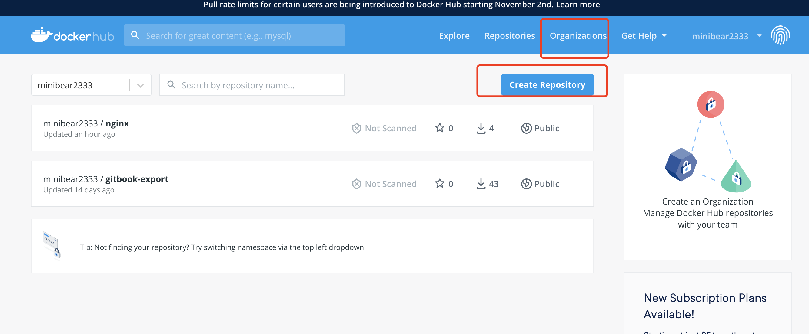
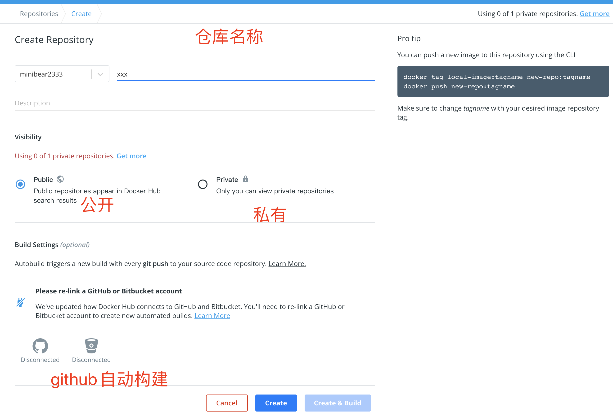

个人仓库
注册帐号并创建仓库
在此网站注册 https://hub.docker.com，注册成功以后会跳到这个页面，点击创建仓库

公开仓库，名称任意

在本地login并提交镜像
输入用户名和密码
$ docker login -u minibear2333 -p xxxxxx
WARNING! Using --password via the CLI is insecure. Use --password-stdin.
Login Succeeded
提交镜像
docker push minibear2333/nginx:hello
个人仓库要在镜像名前加上个人用户名，比如我的是 minibear2333